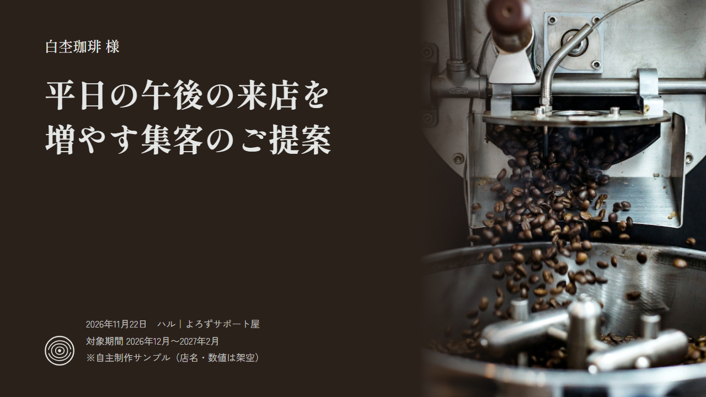
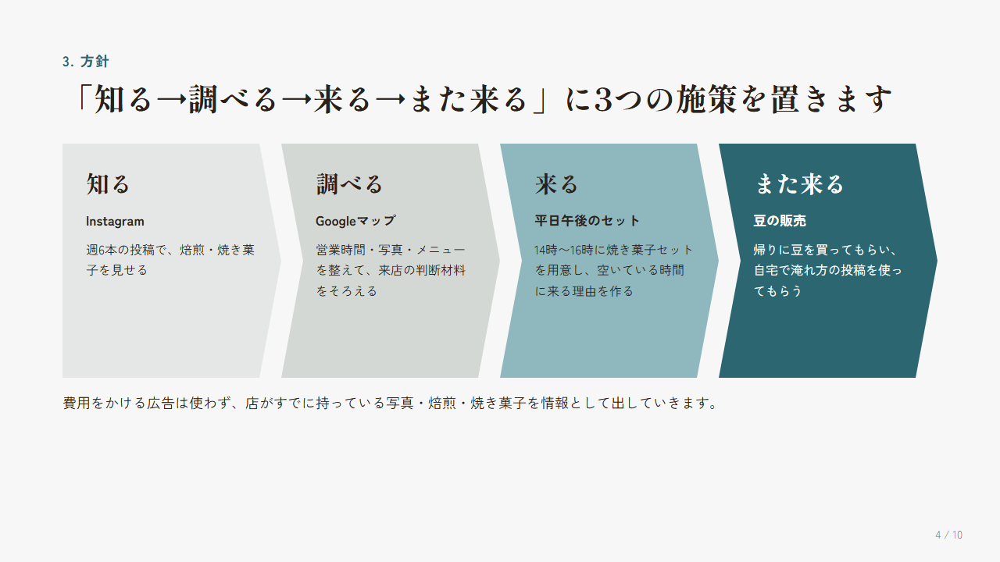
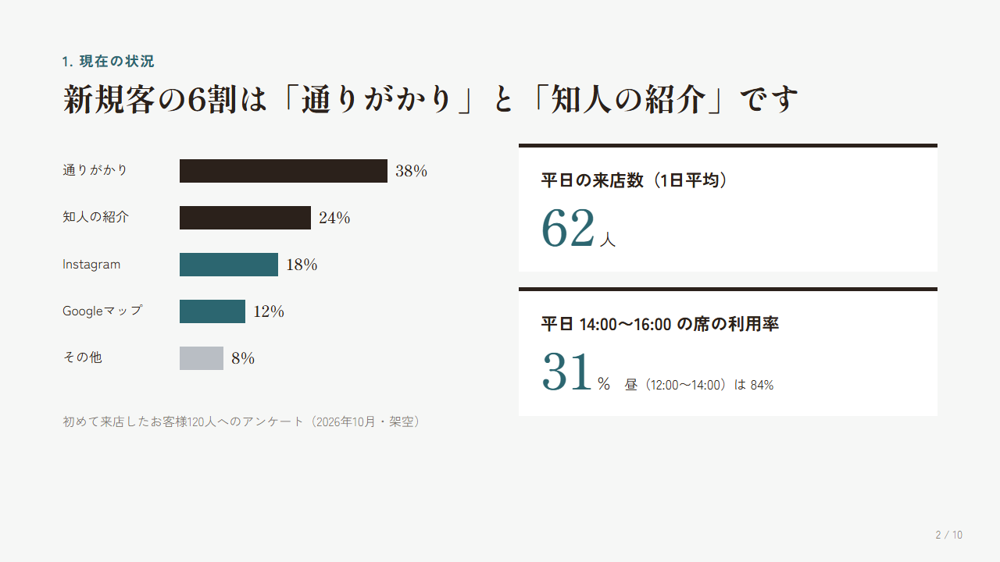
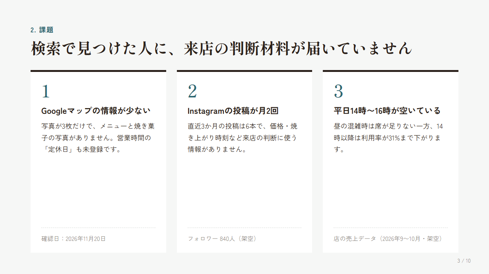
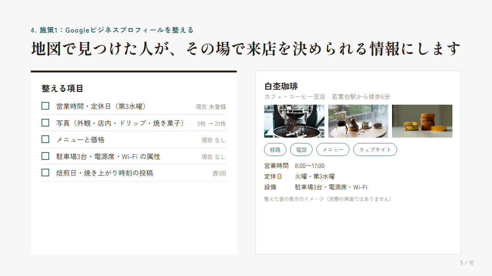
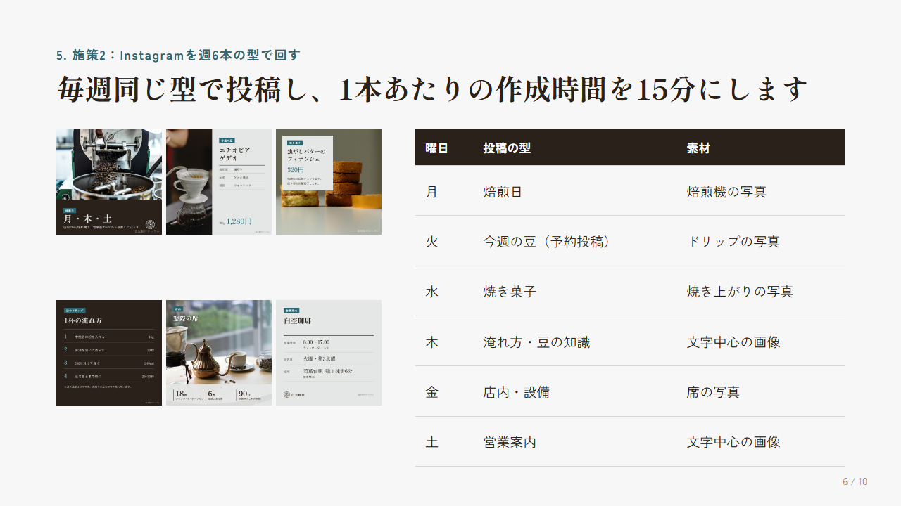
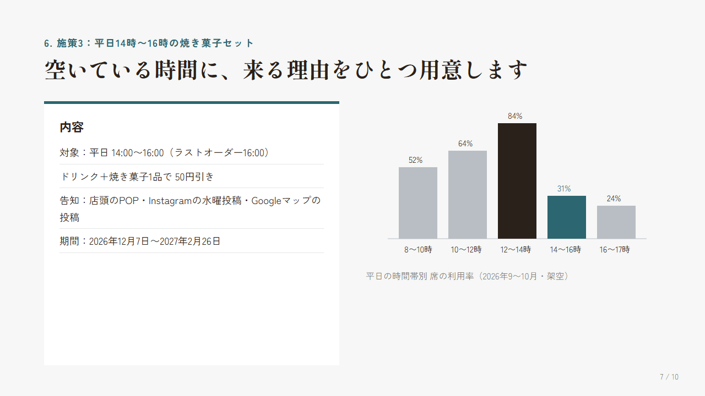
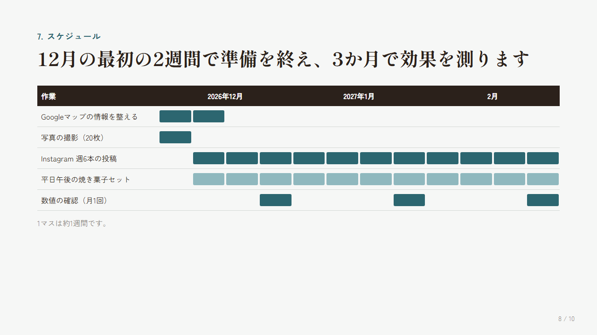
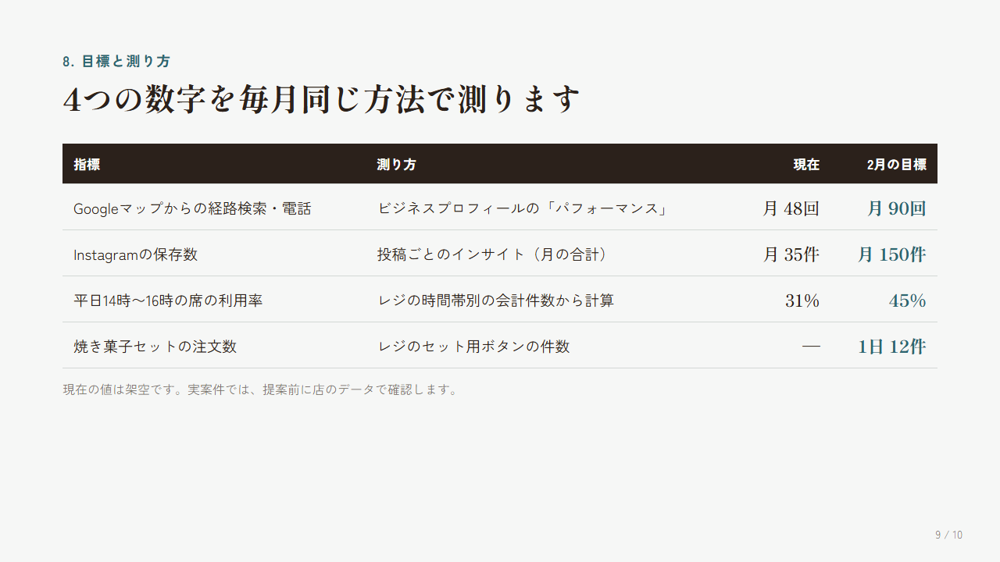
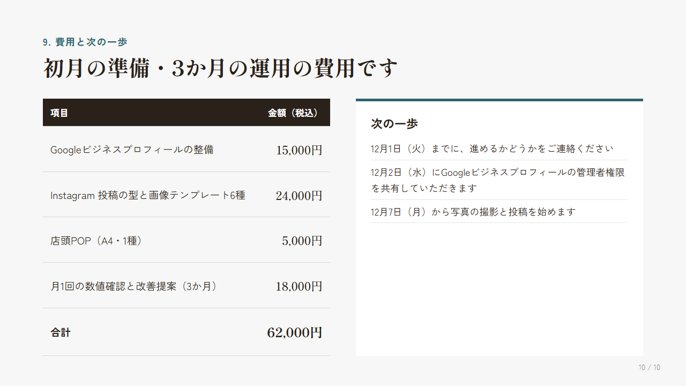

← ポートフォリオ索引
PRESENTATION｜自主制作サンプル
集客提案のプレゼン資料白杢珈琲様・10スライド
架空のカフェ「白杢珈琲」への集客提案です平日の午後の来店を増やす提案を10スライドにまとめています
- スライド
- 10 枚
- 画面の比率
- 16:9・1280×720px
- 対象期間
- 3 か月
- 納品形式
- 3 形式（PDF・画像・HTML）

目次は、見出しの結論です
- 01表紙―
- 02新規客の6割は「通りがかり」と「知人の紹介」です横棒グラフ・数値
- 03検索で見つけた人に、来店の判断材料が届いていません課題3件と確認した事実
- 04「知る→調べる→来る→また来る」に3つの施策を置きます流れの図
- 05地図で見つけた人が、その場で来店を決められる情報にしますチェックリスト・表示のイメージ
- 06毎週同じ型で投稿し、1本あたりの作成時間を15分にします投稿画像6枚・曜日ごとの型の表
- 07空いている時間に、来る理由をひとつ用意します時間帯別の棒グラフ
- 0812月の最初の2週間で準備を終え、3か月で効果を測りますガントチャート
- 094つの数字を毎月同じ方法で測ります指標と目標の表
- 10初月の準備・3か月の運用の費用です費用の表・次の一歩
スライド全点









作り方
- 各スライドの見出しは、そのスライドの結論を1文で書いています。
- 中身は文章ではなく、グラフ・流れの図・ガントチャート・表で見せています。
- 配色と書体は、店のブランド（白杢珈琲）に合わせています。
ファイル
| ファイル | 内容 |
|---|---|
| proposal-slides.pdf | 提案資料（16:9・10ページ） |
| slides/slide-01.png〜slide-10.png | 各スライドの画像（1280×720px） |
| img/ | 資料で使う写真・投稿画像（写真は Unsplash License） |
店名・アンケート・売上・目標の数値はすべて架空です。実案件では、提案前に店のデータで確認します。
応募時の紹介文
架空のカフェへの集客提案を題材にした、10スライドのプレゼン資料の自主制作サンプルです各スライドの見出しを結論の1文にし、グラフ・流れの図・ガントチャート・表で中身を見せる図解中心の構成ですPDF・画像・HTMLの3形式で納品でき、店のブランドの配色と書体に合わせて作っています
白杢珈琲 様集客のご提案・10スライド